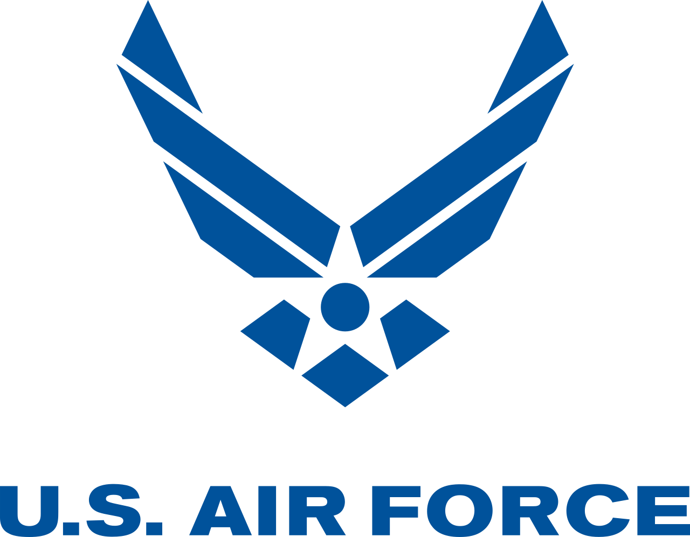
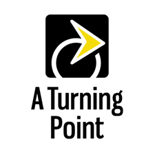
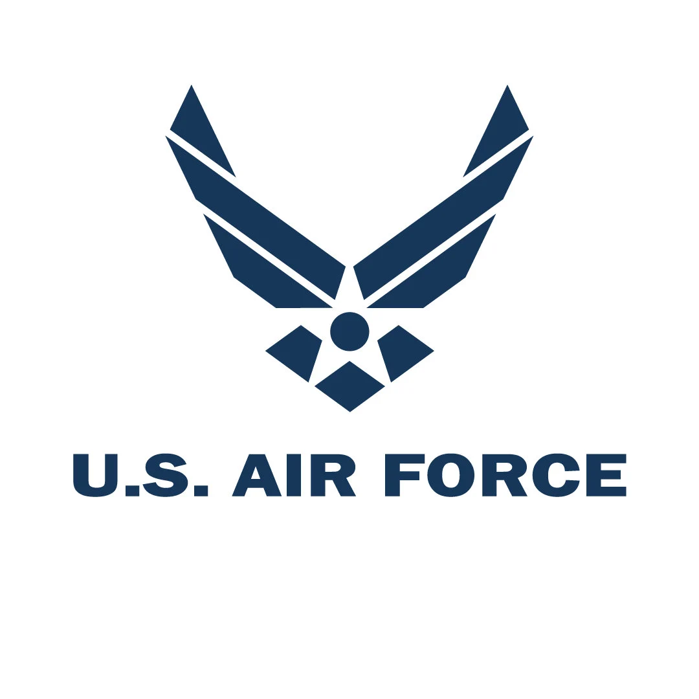

Summary
My goal is to iterate the “why” into programming and
software decisions for organizations that make a difference.
My focus is in creating user-friendly, responsive, reproducible,
and vision-empowered software solutions. With my analytical and
technical experience, I have equipped myself with the skillset that
realizes ideations.
Skills
Proficient in a range of programming languages,
with experience in developing and maintaining responsive,
user-friendly, and visually appealing websites using modern
web development frameworks and tools. Has full understanding
of development process in cloud environments and
low-code solutions. A resourceful self-starter who has
led teams and coordinated with personnel beyond the
technical scope in high stress environments.
Has an inactive Top Secret//SCI clearance and is bilingual.
Companies and Partners


